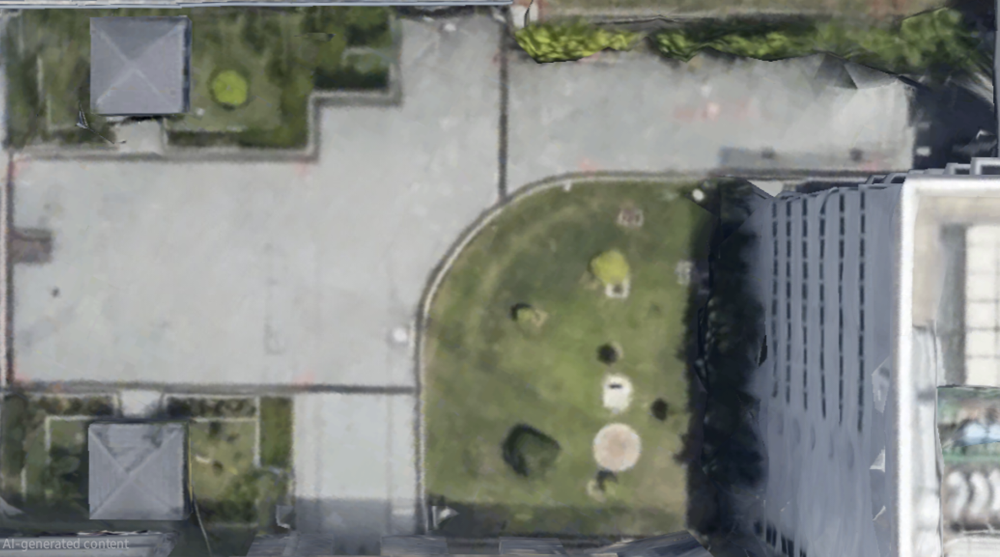

Simulation Architecture. Gazebo Harmonic. ROS 2 Jazzy. Nav2 Autonomy.
High-fidelity digital twin simulation engineering specification for autonomous airfield navigation, synthetic sensor modeling, and Nav2 multi-waypoint patrol verification.
This engineering deliverable documents the architecture, digital twin asset pipeline, node connectivity, and operational run guide for the FOD Hunter robotic simulation environment, built on the ROS 2 Jazzy ecosystem (Macenski et al., 2022) and high-fidelity runway digital twin methodologies (Krestenitis et al., 2026). The digital twin enables software-in-the-loop (SIL) verification of kinematically constrained global path planning (SmacPlannerHybrid with Dubins curves; Macenski et al., 2020), dynamic costmap inflation, local obstacle avoidance, and inter-machine C2 waypoint dispatch prior to physical chassis deployment.
Interactive video captures demonstrating autonomous obstacle avoidance, trajectory generation, and path execution across both simulation worlds:
📍 NUS EA Field Autonomous Navigation
Phase 1 TargetAgileX Scout V2 proxy rover navigating outdoor campus walkways, avoiding simulated dynamic obstacles, and executing waypoints cued through Nav2 on the aerial orthophoto map.
🛫 Aarhus Airport FOD Hunter (EKAH)
Reference Exploration100m high-speed asphalt corridor sweep, centerline tracking, and multi-obstacle avoidance simulation modeled after Aarhus Airport Runway 10R/28L.
Rigorous software-in-the-loop testing on the digital twin verified four essential performance and safety interlock metrics prior to physical hardware integration:
Evaluated on Ubuntu 24.04 / WSL2 with physics rate of 1000 Hz, demonstrating zero frame skipping under full Nav2 and Gazebo load.
Enforced via SmacPlannerHybrid motion primitives to prevent severe tire scrubbing and high-current (>2.4 kW) motor stalls on high-friction asphalt.
Benchtop UAV-to-UGV JSON dispatch over dedicated 5 GHz private subnet (192.168.1.0/24) using CycloneDDS unicast peering.
Dynamic obstacle avoidance verified using nav2_collision_monitor multi-tiered safety polygons around moving pedestrian models.
📍 1. NUS EA Field Environment (In Scope)
The NUS EA Field simulates an outdoor courtyard setting with complex boundary geometries, including concrete pathways, grass zones, building perimeter walls, and pedestrian walkway constraints.
🗺️ Aerial Satellite Texture Model

High-resolution Google Earth orthophoto used as ground plane texture.
📐 Field Dimensions & Zone Annotations

Annotated boundary dimensions and non-traversable obstacle masks.
Traditional 2D/3D LiDAR SLAM algorithms (e.g., SLAM Toolbox, Cartographer) were determined to be unreliable for primary airfield map generation: open runway tarmac and expansive courtyards lack dense, static vertical geometric structures within laser scan range ($≤ 25\text{ m}$). This results in degenerate scan-matching along long straightaways and longitudinal pose covariance explosion (Shan et al., 2025).
To guarantee zero-drift geofencing, a georeferenced orthophoto static costmap workflow was implemented:
- High-Resolution Orthophoto Capture: Satellite and aerial imagery scaled to an exact grid resolution of 0.05 m/pixel.
- Nav2 Map Editor Masking: Non-traversable grass verges, concrete perimeter walls, and drainage grates were manually annotated as lethal keep-out zones with cost 254 (Lethal Obstacle).
- Traversable Pathway Encoding: Paved concrete walkways and tarmac surfaces were designated as free traversable space with cost 0 (Free Space), providing absolute boundary safety interlocks.
🛫 2. Aarhus Airport Runway (EKAH) Environment (Reference)
A 100m × 20m high-fidelity asphalt runway model featuring runway edge lighting, painted centerline markings, thresholds, and sparse long-distance line-of-sight conditions.
🌐 Gazebo 3D Runway World

Simulated outdoor physics world with realistic lighting & friction coefficients.
🛫 Runway Surface Terrain Model

Asphalt surface collision mesh with centerline and touchdown markings.

🤖 Robotic Platform (Proxy Model)
- Chassis: AgileX Scout V2 4WD skid-steer chassis (modeled through differential-drive kinematic abstractions)
- 2D LiDAR: Hokuyo laser scanner (
/scan) for dynamic obstacle detection & clearance - Forward Camera: Optical sensor (
/camera/image_raw) for forward visual feed - State Estimation: Wheel odometry fused with static runway map alignment
🧠 Autonomous Autonomy Stack
Nav2 Jazzy Pipeline- Global Planning:
SmacPlannerHybrid(Hybrid-A* with Dubins Motion Primitives enforcing $R_{min} \ge 1.5\text{ m}$ to eliminate tire scrub / high-current stalls on $\mu \approx 0.8$ asphalt; NavFn retained as Phase 1 baseline) - Local Controller: Primary:
Regulated Pure Pursuit (RPP)withuse_regulated_linear_velocity_scaling: true/ MPPI Controller for dynamic obstacle clearance - Safety Interlocks: Multi-zoned
nav2_collision_monitorsafety polygons - Visualization: Pre-configured RViz2 inspection interface
The multi-agent Software-in-the-Loop (SIL) testbench validates UAV-to-UGV coordination without physical flight risks. An isolated 5 GHz local Wi-Fi router subnet (192.168.1.0/24) connects the simulated aerial scout to the ground navigation node:
Static IP: 192.168.1.10. Executes YOLO edge inference simulation, packs georeferenced FOD detections, and transmits structured JSON alerts.
Static IP: 192.168.1.20. Executes Gazebo Harmonic, Nav2 SmacPlannerHybrid, and translates aerial alerts into local map coordinates via navsat_transform_node.
CycloneDDS Unicast Peering Configuration (cyclonedds.xml)
Standard UDP multicast discovery is suppressed by default on academic campus Wi-Fi networks due to mDNS packet dropping and router IGMP snooping. Unicast peer discovery directly resolves node addresses across the subnet with zero packet loss:
<?xml version="1.0" encoding="UTF-8" ?>
<CycloneDDS xmlns="https://cdds.io/config">
<Domain id="any">
<General>
<NetworkInterface name="eth0"/>
</General>
<Discovery>
<Peers>
<Peer address="192.168.1.10"/>
<Peer address="192.168.1.20"/>
</Peers>
<ParticipantIndex>auto</ParticipantIndex>
</Discovery>
</Domain>
</CycloneDDS>Ingested JSON C2 Alert Payload Schema (< 2 KB)
{
"header": { "threat_id": "FOD-2026-0042", "timestamp": 1726561800.125 },
"source": "UAV-ALPHA",
"target_type": "METALLIC_FASTENER",
"confidence": 0.942,
"wgs84_coords": { "lat": 1.3005821, "lon": 103.7712394, "alt_m": 18.52 },
"priority": "HIGH",
"recommended_action": "SWEEP_AND_VACUUM"
}
Upon reception, the UGV's navsat_transform_node converts the WGS84 GPS coordinates into local Cartesian map frame coordinates $(x, y)$, instantly cueing Nav2's NavigateToPose action server.
The Phase 1 simulation directly interfaces with the exact same ROS 2 topic names, action servers, and transform hierarchy (/tf) utilized on the physical vehicle. This guarantees zero software rewrites during hardware bringup:
| Subsystem Domain | Phase 1 Digital Twin (Simulation) | Phase 2 Physical Hardware (Real UGV) | ROS 2 Interface Parity |
|---|---|---|---|
| Drivetrain & Kinematics | Gazebo DiffDrive Plugin in physics loop | STM32 F446RE MCU bridging ZLAC8015D dual-channel hub motor servo driver over CAN bus | /cmd_vel (Twist)/odom (Odometry) |
| Obstacle Sensing | Simulated 2D Hokuyo laser scanner (/scan) |
Livox Mid-360 3D solid-state LiDAR processed via pointcloud_to_laserscan and patchworkpp ground segmentation |
/scan (LaserScan)/livox/lidar (PointCloud2) |
| C2 Telemetry Datalink | Dedicated 5 GHz Wi-Fi Router Subnet (CycloneDDS unicast) | Microhard P900 V2 (917–925 MHz FHSS RF, AES-256 encrypted, Singapore IMDA TS SRD compliant ≤ 100 mW EIRP; IMDA, 2021; Republic of Singapore, 1999) | /c2/threat_dispatch/c2/telemetry |
| State Estimation | Gazebo ground-truth physics odometry with simulated Gaussian noise | Dual-EKF (robot_localization; Moore & Stouch, 2014) fusing Unicore UM980 RTK-GNSS (10 Hz), 9-DOF IMU (100 Hz), and optical wheel encoders |
/odometry/filtered/tf (odom → base_link) |
1. System Requirements
- Operating System: Ubuntu 24.04 LTS (Noble Numbat)
- ROS Distribution: ROS 2 Jazzy Jalisco
- Simulator: Gazebo Sim Harmonic (
gz-sim 8.x)
2. Install Required APT Packages
Open a terminal (Ctrl + Alt + T) and install the required ROS 2 Jazzy packages:
Before running the simulation for the first time or whenever configuration files are modified:
source /opt/ros/jazzy/setup.bash initializes ROS 2 commands, and source install/setup.bash overlays project-specific packages and custom plugins onto your shell session.
Running the simulation requires two separate terminal windows (or tabs) for the simulator and the Nav2 autonomy stack.
🟢 Environment 1: NUS EA Field (Phase 1 Target)
Terminal 1: Start Gazebo Simulation
Terminal 2: Start Nav2 & RViz2
Terminal 3 (Optional): Dynamic Obstacle Spawner
🟢 Environment 2: Aarhus Airport Runway (EKAH)
Terminal 1: Start Gazebo Runway Simulation
Terminal 2: Start Nav2 & RViz2

RViz2 active inspection interface showing global SmacPlannerHybrid path (green line), costmap inflation, and laser scans.
Dispatching Navigation Goals:
- Click the
Nav2 Goaltool button in the RViz2 top toolbar (or press g on your keyboard). - Hover your mouse over the target destination coordinate on the 2D occupancy map.
- Left-click and hold at the destination point.
- Drag your cursor to define the desired terminal heading orientation (arrow vector).
- Release the mouse button to publish the goal pose to
/goal_pose.
SmacPlannerHybrid computes kinematically feasible Dubins paths enforcing $R_{min} \ge 1.50\text{ m}$, while the Regulated Pure Pursuit (RPP) local controller dynamically tracks the trajectory with adaptive speed regulation around obstacles.
When terminating a simulation session, press Ctrl + C in each terminal window. To purge any orphaned background Gazebo or ROS 2 daemon processes:
📚 References & Technical Standards
The simulation architecture, navigation stack, and communication protocols adhere to statutory aviation standards and peer-reviewed literature.